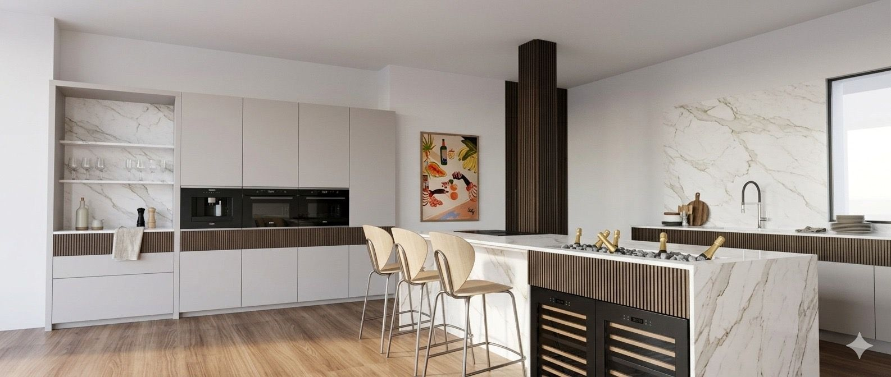
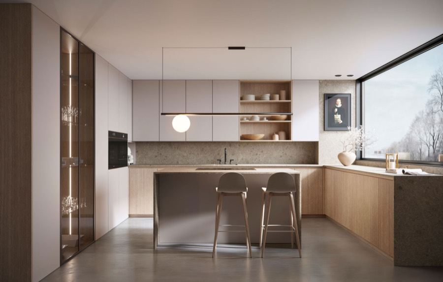
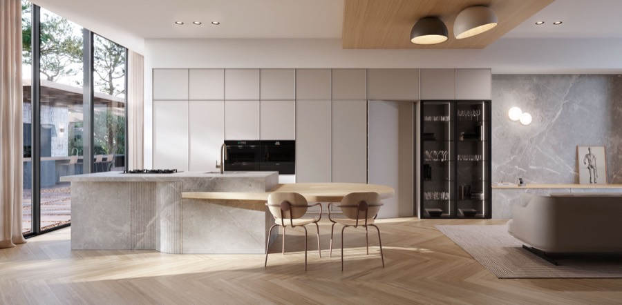
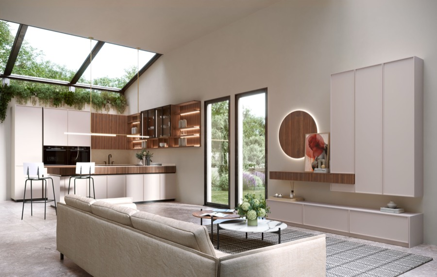
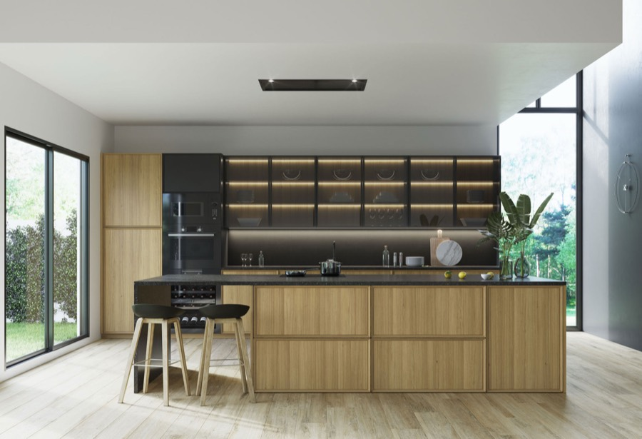
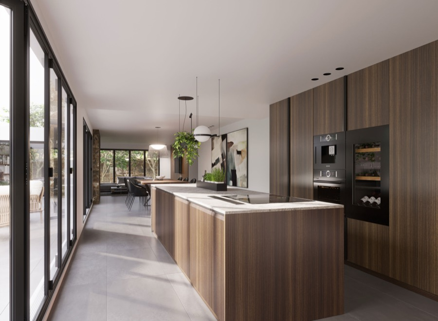
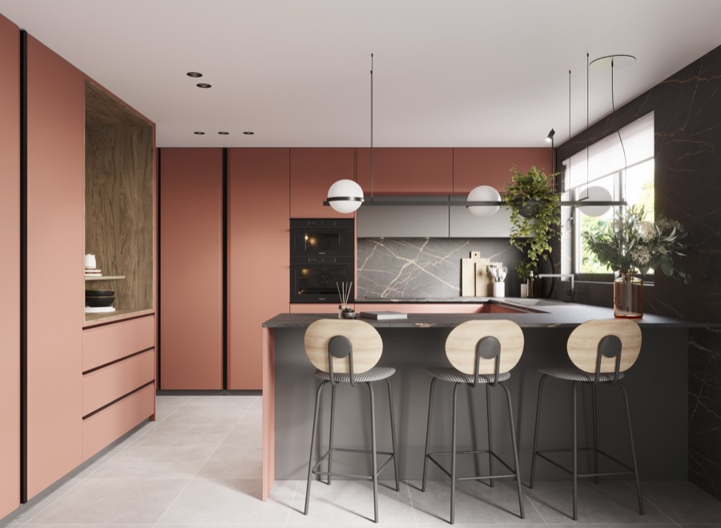

Cocinas
Proyectos de cocina a medida pensados desde la arquitectura del espacio. La pieza que organiza la casa entera.
Saber más →
Especialistas en Filosofía /HOMING\
Proyectos de cocina a medida pensados desde la arquitectura del espacio. La pieza que organiza la casa entera.
Saber más →Sistemas de organización que definen el espacio. Cada objeto en su sitio, cada superficie con intención.
Saber más →Desde el primer trazo hasta la última pieza instalada. Diseño, materia y dirección de obra bajo una sola mirada.
Saber más →/HOMING\
Homing no es decorar. Es una manera de habitar: espacios abiertos y conectados donde la cocina y el hogar se entrelazan en un diálogo de formas, materiales y luz. Cada proyecto de Leun parte de escuchar cómo vives, antes de proponer cómo puede verse.
El espacio bien equipado no se nota. Se siente.
Conoce nuestra filosofía →Estudio oficial
Somos Leun Interiorismo, el estudio oficial /HOMING\ by Saitra en Donostia. Diseñamos tu proyecto y lo materializamos con la fabricación a medida de Saitra.
Kitchen · Bathroom · Living. Cocinas, vestidores, baños y hogar concebidos como un todo coherente.

Cocina, comedor y lectura en continuidad visual. Bancada a medida y librería integrada: la casa que fluye sin costuras.

Líneas precisas y atmósfera serena. Desayunador y lavandería ocultos; el interior se prolonga hacia la cocina de exterior.

Espacios integrados y coherentes. Acabados coordinados que amplían la estancia y refuerzan la continuidad visual.

Roble que devuelve calidez y atemporalidad a la cocina moderna. Veta honesta, presencia serena.

Puerta en madera de eucalipto con el tirador integrado SUA. Diseño, ergonomía y durabilidad en un mismo gesto.

Cocina abierta que integra sala y comedor. Distribución en U que exprime al máximo la luz natural.
← Desliza para explorar los modelos →
Nuestro local de Donostia nace inspirado en las salas Virenis, Eloria y Tessira del showroom de Saitra en Villa Roseta: materia, luz y continuidad llevadas al detalle.
Cuéntanos cómo vives. Cada proyecto comienza con una conversación, sin compromiso, en nuestro estudio de Donostia · San Sebastián. Apertura octubre 2026.